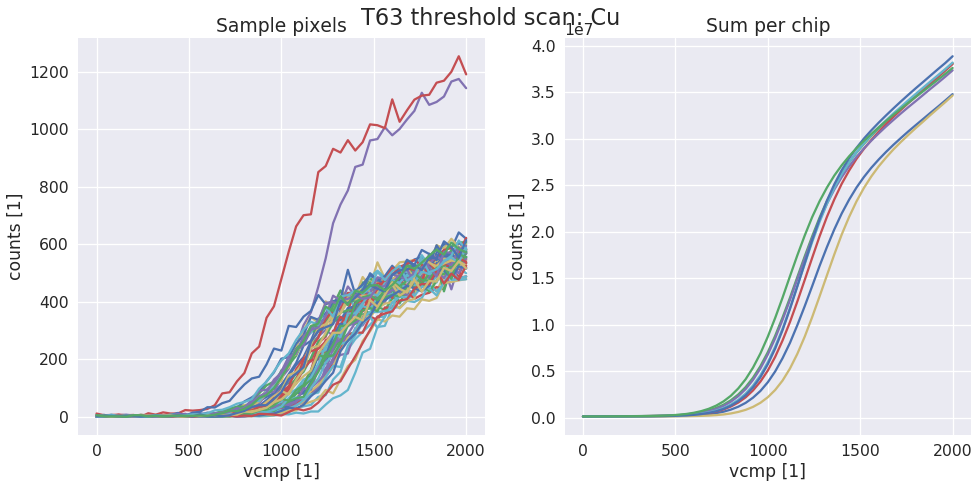
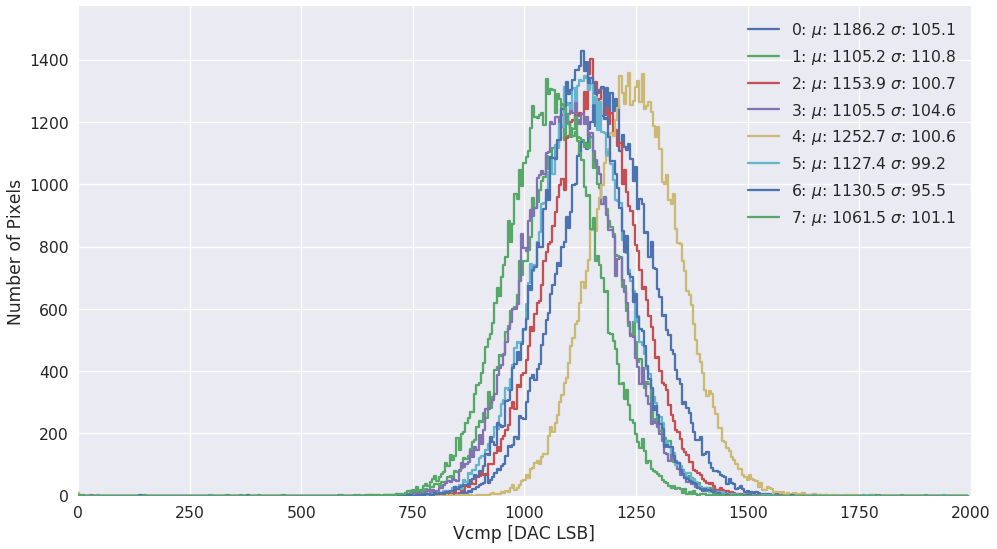
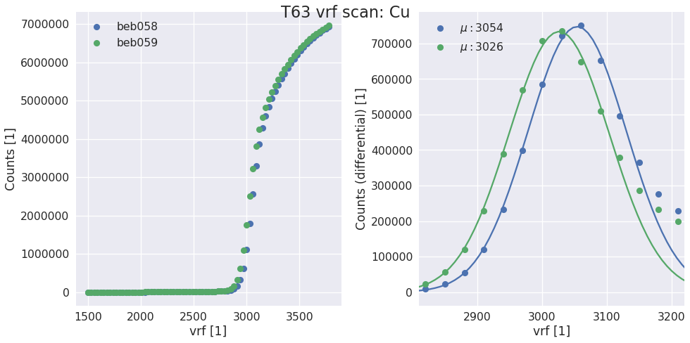

sls_detector_tools package¶
Submodules¶
sls_detector_tools.calibration module¶
The main funtions to record and fit calibration data. An example on how to use the functions can be found in sls_detector_tools/calibration/trim_and _calibrate_vrf.py
The fitting relies on the routines in sls_cmodule
Todo
Should we moved to scaled fits for all detectors?
-
sls_detector_tools.calibration.do_scurve(detector, xraybox, start=0, stop=2001, step=40)[source]¶ Take scurve data for calibration. When not using the Xray box pass a dummy xray box to the function and make sure that shutter is open and target is correct!
Examples
data, x = calibration.do_scurve(d, box)
-
sls_detector_tools.calibration.do_scurve_fit(mask=None, fname=None, thrange=(0, 2000))[source]¶ Per pixel scurve fit from saved data and save the result in an npz file
Todo
Move to scaled fits?
Examples
fit_result = calibration.do_scurve_fit()
-
sls_detector_tools.calibration.do_scurve_fit_scaled(mask=None, fname=None, thrange=(0, 2000))[source]¶ Per pixel scurve fit from saved data and save the result in an npy file
-
sls_detector_tools.calibration.do_trimbit_scan(detector, xraybox, step=2, data_mask=None)[source]¶ Fuction to setup the detector with correct Vcmp and Vcp and then performa a trimbit scan
-
sls_detector_tools.calibration.do_vrf_scan(detector, xraybox, pixelmask=None, start=1500, stop=3800, step=30)[source]¶ Does a vrf scan and fits the differential of the scurve for each halfmodule in the detector system.
Todo
Check the multi module system support
Parameters: - detector (SlsDetector) – The detector that should be scanned
- xraybox (XrayBox or DummyBox) – Used for selecting the right target and controlling the shutter
- pixelmask (np_array(bool), optional) – Numpy array of bools of the same size and one frame or None to disable
- start (int, optional) – start value of the scan
- stop (int, optional) – end value of the scan
- step (int, optional) – stepsize
Returns: - vrf (list) – list of vrf values for each half module
- t (float) – Suggested exposure time for the scurve
Examples
vrf, t = calibration.do_vrf_scan(d, box)
-
sls_detector_tools.calibration.find_and_write_trimbits_scaled(fr_fname, tb_fname, scale, tau=None)[source]¶
-
sls_detector_tools.calibration.find_initial_parameters(x, y, thrange=(0, 2200))[source]¶ Tries to find the best initial parameters for an per pixel scurve fit by using the global average of a chip or module. :param x: x values :type x: numpy_array :param y: y values :type y: numpy_array :param thrange: low and high edge for the fitting :type thrange: (low, high)
Returns: - par (numpy_array) – Array with the initial parameters of the fit
- .. todo:: – Remove hardcoded values where possible and be more flexible with the range
-
sls_detector_tools.calibration.find_mean_and_set_vcmp(detector, fit_result)[source]¶ Find the mean value of the inflection point per chip and set the Vcmp of that chip to the right value
Todo
Merge to one code for all geomtetries
Supported geometries
- 250k
- 500k
- 2M
- 9M
Parameters: - detector (SlsDetector) – The detector that should be used. Can be None to skip the set dac part and only return values
- fit_result (numpy_array) – An array with the result of the per pixel scurve fit
Returns: - vcmp (list) – vcmp for each chip
- vcp (list) – vcp for each half module
- lines (list) – list of lines that can be used with the sls_detector_put
-
sls_detector_tools.calibration.find_mean_and_std(fit_result)[source]¶ Find mean and standard deviation for each chip in the detector
-
sls_detector_tools.calibration.generate_calibration_report(thrange=(100, 1900))[source]¶ Generate a calibration report for the current gain.
Warning
Follows the old style of calibration and should be updated. Still gives a valuble insigt of the calibration for this gain though.
-
sls_detector_tools.calibration.generate_mask()[source]¶ Generate mask of bad pixels using calibration data TODO! verify with multi module systems
-
sls_detector_tools.calibration.get_data_fname(run_id=None)[source]¶ Get the filename of the npz file with the vcmp data. The filename is built from det_id, target and run_id as well as calibration.type. Allows for convenient access during calibration.
Parameters: run_id (int, optional) – Used only if requesting a special run_id otherwise fetched from cfg.calibration.run_id Returns: fname – filename including .npz ending Return type: str Examples
cfg.det_id = T45 cfg.run_id = 1 cfg.calibration.target = Cr get_data_fname() >> T45_vcmp_CrXRF_1.npz
-
sls_detector_tools.calibration.get_fit_fname(run_id=None)[source]¶ Get the name of the file containing the fit result. Shares the structure with the data file but ends with _fit.npy instead
Parameters: run_id (int, optional) – Used only if requesting a special run_id otherwise fetched from cfg.calibration.run_id Returns: fname – name of the fit file Return type: str
-
sls_detector_tools.calibration.get_halfmodule_mask()[source]¶ Get the masks for all half modules in the detector using the geometry from cfg.geometry
Returns: A list containing slice objects to select each half module Return type: list with slices Raises: NotImplementedError– If the selected geometry is not supportedExamples
Select a half module from a module
hm = get_halfmodule_mask() data_from_halfmodule = data[hm[0]]
-
sls_detector_tools.calibration.get_tbdata_fname()[source]¶ Get the name of the npz file containing the trimbit data. Note that this file does not have a run_id
Returns: fname – Name of the file Return type: str
-
sls_detector_tools.calibration.get_trimbit_fname()[source]¶ Get the name of the trimbit files without the file ending. This is because when passed by commandline to the slsDetectorSoftware this then loads trimbits for all modules based on their id.
Returns: fname – Name of the file Return type: str
-
sls_detector_tools.calibration.get_vrf_fname()[source]¶ Get the name of the npz file containing the vrf scan data
Returns: Filename Return type: str
-
sls_detector_tools.calibration.load_trim(detector)[source]¶ Load trimbits for the current calibration settings. Defined in config.py
-
sls_detector_tools.calibration.rewrite_calibration_files(detector, tau=None, hostname=None)[source]¶ Rewrite the calibration files using the center of the trimmed distributions saved with suffix _rw, needs a connected detector
Specifying hostnames will use offline files only TODO! Tau should check if a tau is already present
-
sls_detector_tools.calibration.setup_detector(detector)[source]¶ Make sure that the detector is in a correct state for calibration. Settings that are applied are taken from the config file:
- Number of frames
- Period
- Exposure time
- Dynamic range
- clock divider
- trimbit used during initial scurve
- V_trim
- Vrs
-
sls_detector_tools.calibration.setup_measurement(detector)[source]¶ Contexmanger that is used in many of the tests. Sets up the detector and returns a receiver which can be used to get images from the receiver zmq stream.
clk = 'Full Speed' with setup_test_and_receiver(detector, clk) as receiver: detector.acq() data = receiver.get_frame()
sls_detector_tools.config module¶
Created on Mon Nov 20 11:37:05 2017
@author: l_frojdh
-
class
sls_detector_tools.config.Eiger2M[source]¶ Bases:
objectBackend board numbers and hostanmes for the ESRF Eiger2M
-
beb= [74, 71, 64, 102, 72, 73, 87, 88]¶
-
hostname= ['beb074', 'beb071', 'beb064', 'beb102', 'beb072', 'beb073', 'beb087', 'beb088']¶
-
-
class
sls_detector_tools.config.Eiger9M[source]¶ Bases:
objectBackend board numbers, hostnames and T numbers for the 9M
-
T= [50, 77, 2, 6, 58, 60, 33, 64, 78, 30, 52, 73, 79, 62, 56, 69, 42, 59]¶
-
beb= [111, 70, 109, 116, 92, 91, 122, 113, 105, 121, 104, 54, 117, 125, 103, 100, 127, 106, 84, 61, 78, 76, 101, 56, 97, 96, 30, 38, 40, 29, 59, 58, 95, 94, 119, 55]¶
-
hostname= ['beb111', 'beb070', 'beb109', 'beb116', 'beb092', 'beb091', 'beb122', 'beb113', 'beb105', 'beb121', 'beb104', 'beb054', 'beb117', 'beb125', 'beb103', 'beb100', 'beb127', 'beb106', 'beb084', 'beb061', 'beb078', 'beb076', 'beb101', 'beb056', 'beb097', 'beb096', 'beb030', 'beb038', 'beb040', 'beb029', 'beb059', 'beb058', 'beb095', 'beb094', 'beb119', 'beb055']¶
-
-
class
sls_detector_tools.config.calibration[source]¶ Bases:
objectSettings concerning the calibration
-
clean_threshold= 500¶
-
dynamic_range= 32¶
-
energy= None¶
-
exptime= 3¶
-
flags= ['nonparallel', 'continous']¶
-
fname= 'run'¶
-
gain= False¶
-
global_targets= {'Sn': ['Ag'], 'Ag': ['Sn'], 'Mo': ['Ag'], 'Zr': ['Mo'], 'Ge': ['Cu'], 'Cu': ['Ge'], 'Fe': ['Cu'], 'Cr': ['Fe'], 'Ti': ['Cr']}¶
-
nframes= 1¶
-
npar= 6¶
-
nproc= 12¶
-
period= 0¶
-
plot= True¶
-
run_id= 0¶
-
run_id_trimmed= 1¶
-
run_id_untrimmed= 0¶
-
speed= 'Quarter Speed'¶
-
std= 5¶
-
target= False¶
-
threshold= 1200¶
-
tp_dynamic_range= 16¶
-
tp_exptime= 0.01¶
-
trimval= 32¶ Possible calibration types – XRF = X-ray fluorescence beam = Monochromatic (synchrotron) TP = Test pulses
-
type= 'XRF'¶
-
vrf_scan_exptime= 0.1¶
-
vrs= 1600¶
-
vtr= 2500¶
-
-
class
sls_detector_tools.config.path[source]¶ Bases:
objectAll configuration regarding which path to write to or where to find the slsDetectorsPackage.
-
base= '/home/l_frojdh'¶ Base directory for io
-
data= '/home/l_frojdh/data'¶
-
out= '/home/l_frojdh/out'¶
-
test= '/home/l_frojdh/code/scripts/testing'¶ Output directory for module testing
-
-
class
sls_detector_tools.config.tests[source]¶ Bases:
object-
iodelay_interval= {'Full Speed': [(635.49, 5.57), (694.48, 19.11)], 'Half Speed': [(635.62, 5.74), (754.32, 15.11)]}¶
-
plot= True¶ Plot the result of each module test
-
rxb_interval= {'Half Speed': [(786.04, 30.32), (1356.17, 32.95)], 'Full Speed': [(921.58, 45.21), (1327.44, 33.13)]}¶
-
sls_detector_tools.io module¶
File io for the EIGER detector. General io that have not been changed is kept in this file. While relese specific versions can be found in the v18 etc. files. This numbering corresponds loosely to the firmware versions.
Current io version by default imported but can be changed in the config file
- v18 - old style with ascii header
- v19 - master file, no header
- v20 - modified master file?
-
class
sls_detector_tools.io.geant4[source]¶ Bases:
objectClass that holds the data type for reading x,y,c files from the geant4medipix framework.
-
sparse_dt= [('event', <class 'numpy.uint32'>), ('col', <class 'numpy.uint32'>), ('row', <class 'numpy.uint32'>), ('energy', <class 'numpy.float64'>), ('tot', <class 'numpy.float64'>), ('toa', <class 'numpy.float64'>)]¶
-
-
sls_detector_tools.io.load_file(fname, header, N=1)[source]¶ Load EIGER raw file and return image data as numpy 2D array To be used as base for loading frames for single and multi module systems
-
sls_detector_tools.io.load_frame(bname, run_id, frameindex=-1, N=1, shift=0, geometry='500k', default=0)[source]¶ Read one or several Eiger frames from a file. Default function to read data form disk.
Note
The function does always return the right size array and only prints a warning if the file is missing. This is useful for example for the 9M if one or several files are missing.
Parameters: - bname (str) – base name of the file used for consructing master and port files
- frameindex (int) – index of the starting file for multi image files None if not used. Changes the pattern of the filename
- N (int) – Number of frames to read
- shift (int) – Determines which d number to start reading at. Can be used to read parts of a larger detector
- geometry (str) – the geometry of the detector. Name identifies both number of pixels and layout.
- default (number) – default value if the pixels are not filled. Can be used to highligt missing data
Returns: data – data[row, col, N], of the same type as in the file or some cases double.
Return type: numpu_array
-
sls_detector_tools.io.load_txt(fname, delimiter=', ', data_type=<class 'float'>)[source]¶ Load variables from an ascii file function mainly used for chip testing
-
sls_detector_tools.io.read_frame_header(fname)[source]¶ Read and decode the frame header of a raw file
-
sls_detector_tools.io.read_header(fname)[source]¶ Read the header from the master file
Parameters: fname (str) – Filename of the master file Returns: header – Dictionary with the fields in the header file Return type: dict
-
sls_detector_tools.io.read_trimbit_file(fname, ndacs=18)[source]¶ Read a trimbit file and return the trimbits and dacs
Parameters: - fname (str) – Filename for the trimbit file
- ndacs (int, optional) – Number of dacs to expect in the trimbit file . Defaults to 18. Note that for old files it used to be 16 dacs8
Returns: - tb (numpy_array[row, col]) – 2d array with trimbits
- dacs (numpy_array[ndacs]) – dacs stored in the trimbit file
Raises: ValueError– If the file size is wrongFileformat
dacs : (int32)*ndacs trimbits : (int32)*256*1024
-
sls_detector_tools.io.save_txt(fname, header, data, delimiter=', ')[source]¶ Save variables in an ascii file function mainly used for chip testing
-
sls_detector_tools.io.write_trimbit_file(fname, data, dacs, ndacs=18)[source]¶ Write trimbits and dacs to a file. The function checkes that you supply 18 dacs and 256*1024 (halfmodule) trimbits. But you can override the number of dacs if you are writing files for an older software.
Parameters: - fname (str) – Filename
- data (numpy_array) – Array wihth the trimbits
- dacs (numpy_array) – Array with the dacs
- ndacs (int) – The number of dacs to write to the trimbit file. Defaults to 18 which is the current value. But was 16
Raises: ValueError– If the size of the dacs is not the specified oneValueError– If the number of trimbits are not 256*1024 since everything is handled as a half module in the slsDetectorSoftware
sls_detector_tools.load_tiff module¶
Limited support for loading TIFF files from Python Designed to work with the uXAS Eiger TIFF files Currently only supports single image files…
Warning
This module is not complete!!!
sls_detector_tools.mask module¶
General interface to select modules and chips from detectors also holds some geometry information
Uses a dictionary to provide easy access to different geometries trough the cfg.geometry setting.
sls_detector_tools.receiver module¶
Created on Wed Nov 22 10:52:12 2017
@author: l_frojdh
sls_detector_tools.utils module¶
Various functions that might come in handy but doesn’t really fit well into a specific block
-
sls_detector_tools.utils.R(x)[source]¶ Quality measurement for one refelction spot. To be used with a numpy array having the number of counts for a simulated or measured spot
-
sls_detector_tools.utils.generate_scurve(x, n_photons)[source]¶ Return an scurve with some typical parameters
-
sls_detector_tools.utils.get_dtype(dr)[source]¶ Returns the correct numpy dtype from a number or string
-
sls_detector_tools.utils.normalize_flatfield(image)[source]¶ Return a normalized flatfield image based on the current image
-
sls_detector_tools.utils.random_pixel(n_pixels=1, rows=(0, 512), cols=(0, 1024))[source]¶ Generate a list of random pixels with the default beeing one pixel in a single module
Parameters: - n_pixels (int, optional) – Number of pixels to return
- rows ((int, int), optional) – Lower and upper bounds for the rows
- cols ((int, int), optional) – Lower and upper bounds for the cols
Returns: pixels (list of tuples) – List of the pixels [(row, col), (…)]
Examples
———
:: – random_pixel() >> [(151, 30)]
random_pixel(n_pixels = 3) >> [(21, 33), (65, 300), (800,231)]